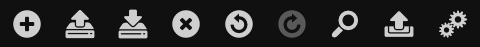

You can use three types of menus with DroidEdit and two ways of navigating between opened documents.
The condensed menu is the current default menu configuration for DroidEdit. It joins all file management actions under one menu item.
The icons represent in this order: , , , , and .
In smaller screens some of the options might be thrown into an overflow menu that can be accessed either by pressing the physical menu button or the infamous 3 dot menu icon.
You can split the action bar into 2 pieces by activating the Appearance → Split Action Bar preference.
The expanded version of the menu has most of the functions that were present in the old menu readily available. This menu only works in Android versions 3.0+ as it uses the new action bar.
The icons represent in this order: , , , , , and .
In smaller screens some of the options might be thrown into an overflow menu that can be accessed either by pressing the physical menu button or the infamous 3 dot menu icon.
To use this menu configuration you just have to turn off the Appearance → Condensed Menu preference.
You can split the action bar into 2 pieces by activating the Appearance → Split Action Bar preference.
In the first versions of DroidEdit, the menu was a custom collapsible bar in the bottom part of the screen. The menu could be opened/closed using a swipe movement, by pressing the small status bar on top of it or using the physical menu button on your device.
The icons represent in this order: , , , , , , , and .
By long pressing some of the icons, they execute a slightly different function. becomes , becomes , becomes and becomes .
In smaller screens, this might still be the best menu to use to conserve screen estate. To use this menu you just have to turn off the Appearance → Action Bar preference.
Navigation tabs are the default way to change from one document to another if you're using Android 3.0+. These tabs appear in the actioin bar and allow you to change document quickly with minimum impact in terms of space required as they use the same vertical space as the action bar. To toggle navigation tabs on and off you can use the Appearance → Navigation Tabs preference.
Another way of navigation from one document to another is a collapsible document list in the right hand side of the screen. Although, it occupies more screen estate than the navigation bar when expanded, in its collapsed form it is nearly imperceptible and can be a good option for smaller screens.
To use the document list you just have to turn off the Appearance → Hide Document List preference.
The navigation tabs and document list can be both used at the same time or you can decide to use a even more minimalist interface, with no visual document navigation capabilities at all, and instead use keyboard shortcuts to switch between documents.
You can open/close the document list by using the shortcut Ctrl+Alt+D.
You can change to the next/previous opened document using Ctrl+Tab and Ctrl+Shift+Tab.
You can change directly to any opened document by it's order number using Ctrl+1-9.